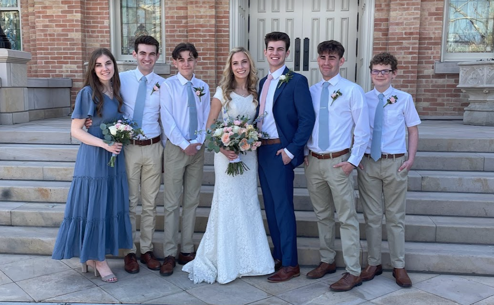
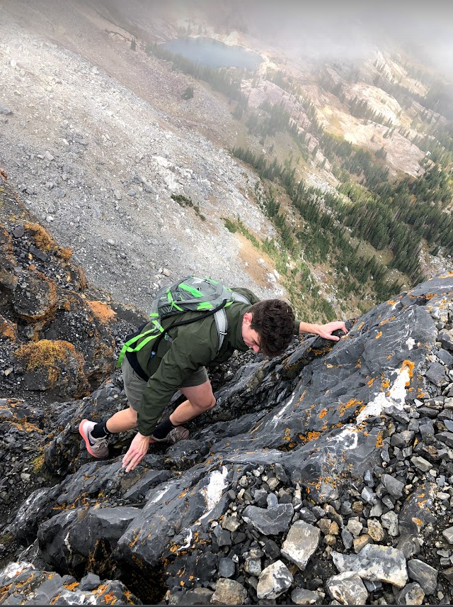
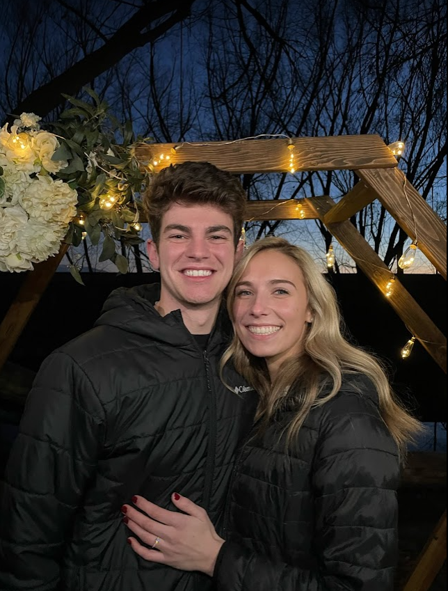

Hey there. I'm Tyler Woodbrey and this page is all about me. Its only right to start off by talking about family. I just recently married the love of my life, Alli. She is everything to me. We fell in love doing something we love, exploring the outdoors. We frequently hike, hammock, and camp. Together, everything we own fits in our tiny 1 bedroom 1 bathroom apartment but what we lack in substance we make up for in fun. Because we have such a small place, thats a great excuse to do more hiking!
  I am currently a Sophomore at BYU Provo. I am in the Marriot Business college studying finance. I have a passion for investments, beginning my very own brockerage account at the young age of 14. Some lucky success stories drove me deeper and deeper into investments, market research, and learning everything I could about finance. My goal is to become a wealth advisor for retirees. Allowing them to have confidence and peace with their finances.
As mentioned, I'm a huge backpacker. I grew up in the Rocky Mountains and learned backpacking on its slopes. View below for a video of someone doing Long's Peak, a very challenging 14ner that I climbed at 16.
Contact Information:
Email: fakemail@fake.com
phone: 999-999-9999
See my LinkedIn Page